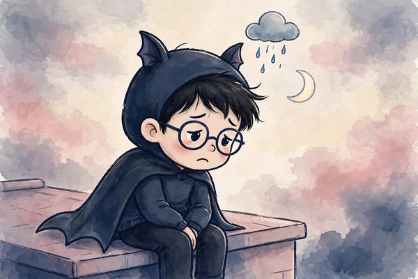
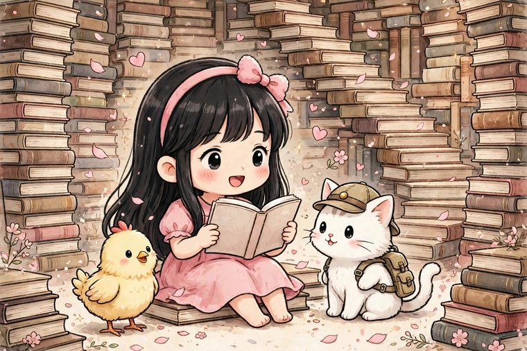
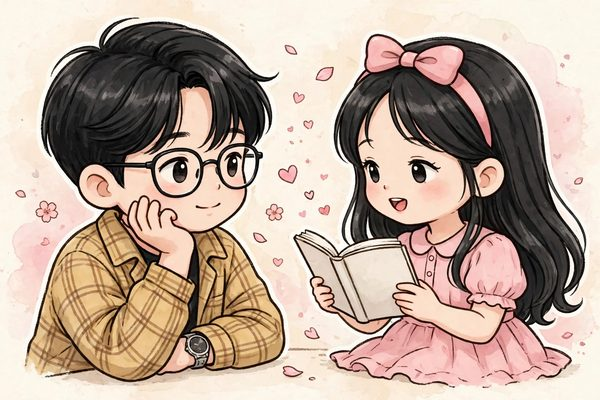
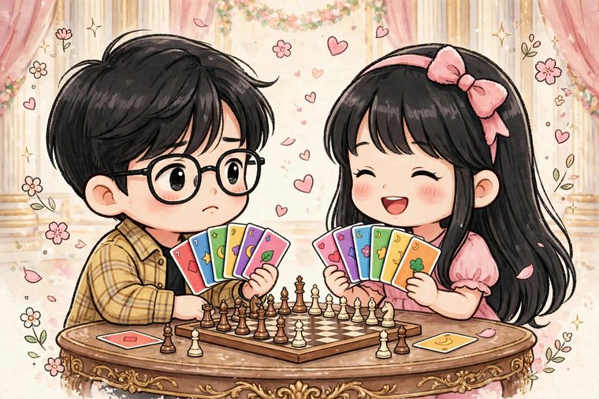
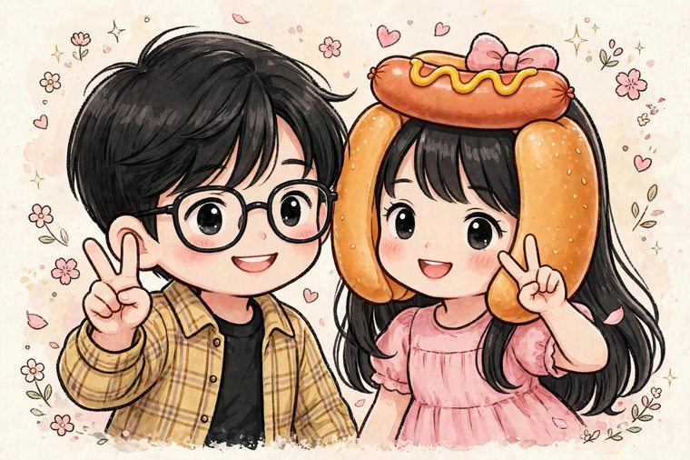

Dongeng Batman dan Tuan Putri
Pada suatu masa, di dua negeri yang dipisahkan jarak dan sinyal, hiduplah seorang penjaga malam dan seorang tuan putri. Mereka belum pernah bertemu muka, jadi kisah mereka kugantung di seutas tali: setiap simpulnya satu babak, dan talinya tidak putus sampai dongeng ini selesai. Konon, siapa membaca sampai simpul terakhir akan mengerti kenapa Batman bisa-bisanya kalah main Uno.

Penjaga Malam dari Negeri Seberang
Di sebuah kota yang lampunya tidak pernah benar-benar padam, hiduplah seorang kesatria bertopeng kelelawar. Siang hari ia menyamar jadi pemuda berkacamata biasa, malam hari ia berjaga di atap-atap gedung, menyimpan perpustakaan kecil di kepalanya dan kesepian yang cukup besar di dadanya. Orang-orang memanggilnya Batman, walau jubahnya lebih sering berupa flanel kuning dan senjatanya paling ampuh hanyalah ingatan yang terlalu detail.

Tuan Putri di Menara Buku
Jauh di negeri seberang, di sebuah menara yang tangganya terbuat dari tumpukan buku, tinggalah seorang tuan putri. Kerjanya membaca puisi dengan suara yang bisa menenangkan badai, ditemani seekor kucing penjelajah yang aneh dan seekor ayam yang bertugas membangunkan seluruh kerajaan tiap pagi. Sang putri ramah kepada semua orang, tetapi cerita-cerita terbaiknya ia simpan hanya untuk orang yang benar-benar mendengarkan.

Suara yang Menembus Malam
Suatu malam, entah oleh sihir apa, suara sang putri menembus jarak dua negeri dan sampai ke atap tempat Batman berjaga. Ia sedang membacakan puisi. Batman, yang biasanya hanya mendengar sirene dan hujan, duduk diam dan mendengarkan sampai selesai. Sejak malam itu, penjaga malam kita punya kebiasaan baru: berjaga sambil menunggu suara dari menara buku, dan kota pun terasa tidak sesepi biasanya.

Dua Ujian dari Istana
Istana tidak sembarangan menerima tamu, maka Batman diberi dua ujian. Ujian pertama, catur: ia menang dengan anggun, sebab strategi adalah nama tengahnya. Ujian kedua, Uno: ia kalah total, berkali-kali, sampai para penjaga istana tertawa dan sang putri menggeleng tidak percaya. Namun anehnya, justru kekalahan itulah yang membuat istana yakin: kesatria ini boleh kalah kartu, asal tidak pernah kalah dalam hal pulang membawa cerita.

Penyamaran Paling Aneh Sedunia
Sang putri gemar menyamar. Kadang ia datang sebagai orang asing tanpa nama, kadang ia muncul dengan topeng paling aneh yang pernah ada di dua negeri: mukanya berbingkai roti hotdog lengkap dengan sosis dan saus mustard. Semua orang tertipu, kecuali satu. Batman mengenalinya dalam sekali lihat, sebab tidak ada penyamaran yang bisa menyembunyikan cara seseorang tertawa dan bercerita. "Itu kamu," katanya. Sang putri pun menyerah dan tertawa.

Janji di Ujung Tali
Dongeng ini belum tamat, dan memang sengaja begitu. Di ujung tali masih ada satu janji yang belum terikat: suatu hari Batman akan turun dari atapnya, menyeberang ke negeri sang putri, dan mereka akan berfoto sungguhan, peace berdua, dengan sang putri tetap memakai hotdog kebanggaannya. Sampai hari itu tiba, penjaga malam tetap berjaga, tuan putri tetap membacakan puisi, dan tali ini tetap menyambung. Bersambung, tentu saja.